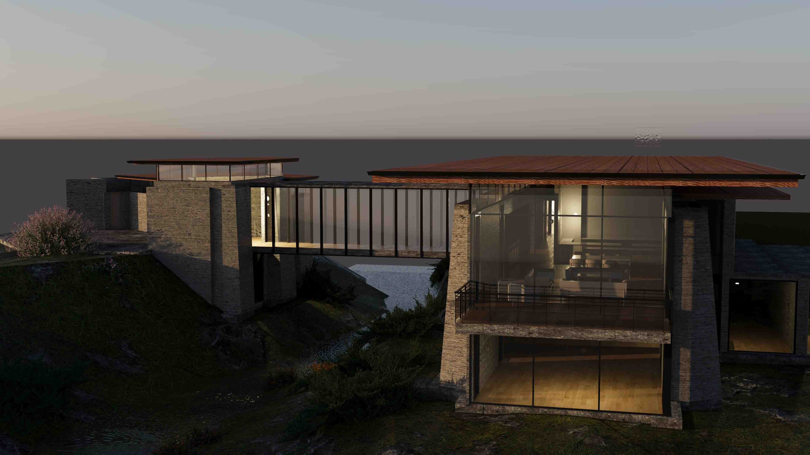
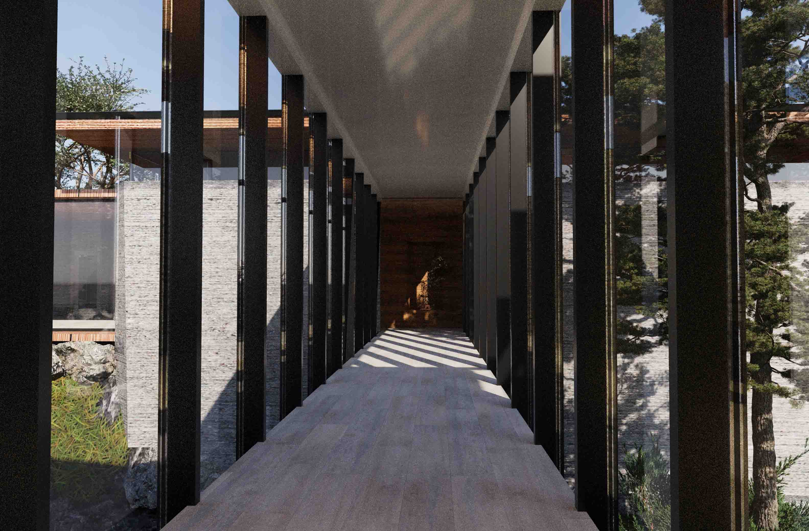
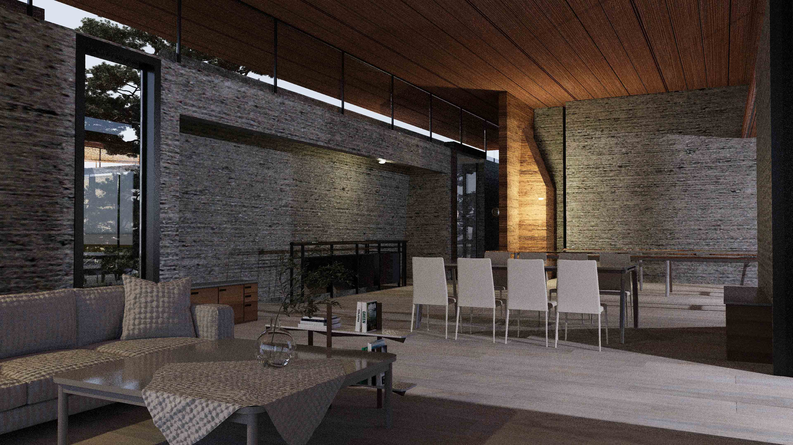
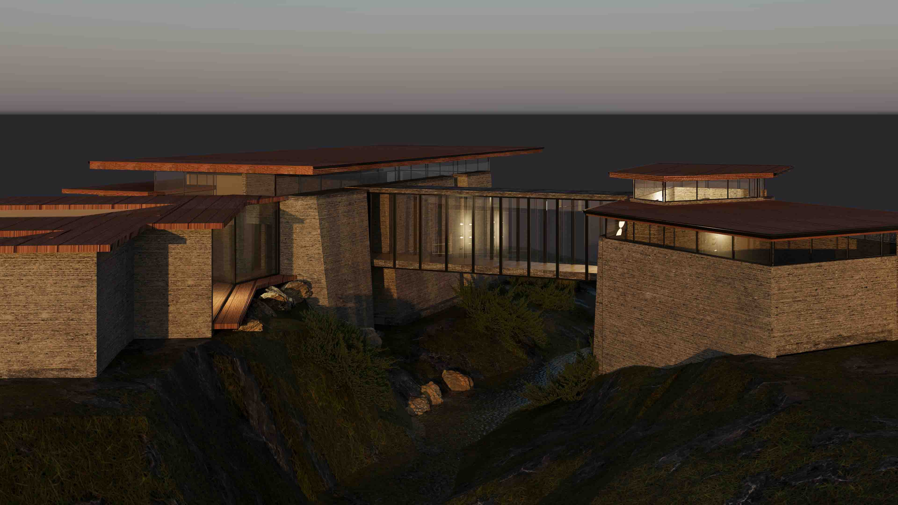

Дом мастера
Big Sur House. Field Architecture. Воссоздание и анализ объекта. Разбор концепции бережной интеграции архитектуры в природный контекст. Проект исследует взаимодействие массивных каменных опор с легким остекленным объемом, парящим над руслом горного потока.
Прототип: Field Architecture





01 / Конструктивно-графическое исследование
Проект выполнен как глубокий разбор тектонических принципов Field Architecture. На планах и продольном разрезе продемонстрирована четкая координация конструктивных осей, раскрыта логика опирания большепролетных деревянных конструкций кровли и проработана детальная пластика фасадов с учетом выноса карнизов и панорамного остекления.